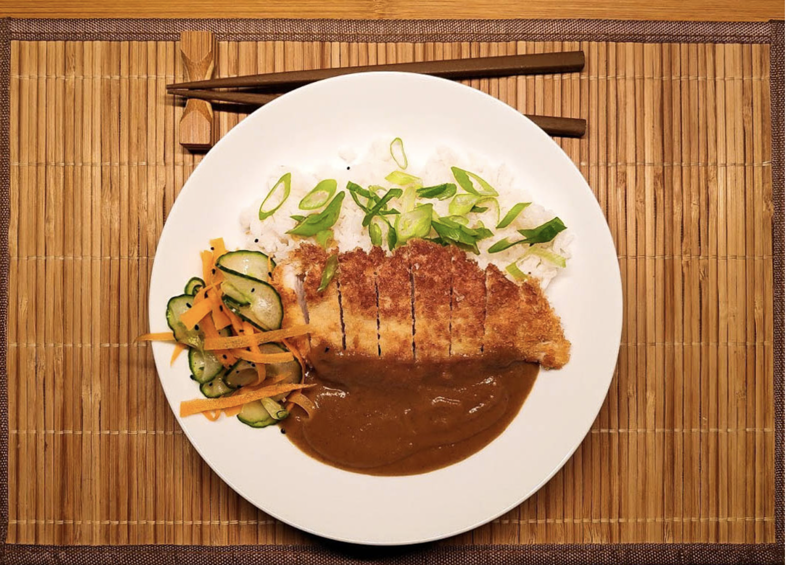

Creamy Chicken Katsu

Description
Posted on insightflavour by Łukasz Babral on March 11, 2020, this creamy chicken katsu is the
perfect dish that brings all who eat it good fortune. Garnished with onion
and pickle salad, serve this dish over a bed of steamy rice for a wonderful
lunch, or dinner meal.
Ingredients for sauce
- 2 medium carrots - diced
- 2 garlic cloves - sliced
- 2 medium shallots - diced
- 450ml (0.47 quart) of beef stock
- 200ml (0.2 quarts) coconut cream (half a tin)
- 2 tsp soy sauce
- 2 tsp honey
- 4 tsp curry powder
- 0.5 tsp garam masala
- Juice of ¼ lime
- 2 tbsp rapeseed oil
Ingredients for chicken
- 2 chicken breasts cut in half lengthways
- 2 tbsp soy sauce
- 100g (3.5oz) panko breadcrumbs
- 50g (1.8oz) plain flour
- 100ml (0.1 quarts) rapeseed oil to shallow fry
Ingredients for sticky rice
- 250g (8.8oz) jasmine rice
- 500 ml (0.52 quart) of water
- ½ tsp salt
Ingredients for pickle salad
- 1/3 cucumber [around 150g (5.3oz)]
- 1 medium carrot
- 1g (0.03oz) Nigella seeds
- 100g (3.5oz) white wine vinegar
- 50g (1.7oz) caster sugar
- 50g (1.7oz) water
Method for chicken
- Pound the chicken breast to make it evenly flat - around 1 cm thick.
- Marinate the chicken in soy sauce for a minimum of 30 minutes.
- When ready pane chicken in flour then egg and panko breadcrumbs.
- Shallow fry on medium heat oil until golden brown on each side.
Method for pickled salad
- Shave carrot with the peeler to create long ribbons.
- Slice cucumber very finely.
- Mix water with vinegar and sugar in the small pot, bring to the boil and take off the heat.
- Add carrot and cucumber to the pickle for 15 minutes.
- Remove vegetables from the liquid and refrigerate them until needed.
- When served sprinkle with some Nigella seeds.
Method for the sauce
- On the medium-hot pan with 2 tbsp of oil fry carrots, onions and garlic for around 15 minutes.
- Add curry powder and fry for another minute.
- Transfer to a pot and add beef stock, honey and soy sauce. Cover with lid and cook on medium heat for 10 minutes.
- Add coconut cream and cook for further 10 minutes covered (be careful, if the heat is too high it may overboil).
- Add garam masala and lime juice and blend the sauce with a hand blender until smooth.
- Reduce it by simmering if you like it super thick, check the seasoning.
Method for rice
- Bring the water to a boil in a medium saucepan. Stir in the rice and the salt, cover and reduce the heat to low. Simmer for 15 minutes or until all of the water is absorbed.
- Taste the rice, if it is still too firm, add a few more tablespoons of water. Cover the pan and let the rice absorb the water off of the heat, serve when ready.